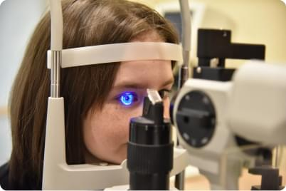

Аппартное лечение
-
Электростимуляция «ЭСОМ»
Назначается при:Миопия, гиперметропия, астигматизм, амблиопия, начальная пресбиопия, астенопия, аккомодативные нарушения, атрофия зрительного нерва, дистрофия сетчатки, пигментный ретинит, начальная катаракта, птоз
-
Магнитотерапия «АМО-АТОС»
Назначается при:внутриглазные кровоизлияния, сосудистые заболевания глаз, кератиты, увеиты, глаукома, любые воспалительные процессы, сопровождающиеся отеком, амблиопия любой этиологии, нарушения аккомодации при миопии, гиперметропии, астигматизме
-
 Лазеростимуляция «ЛАСТ»
Назначается при:амблиопия с центральной фиксацией, миопия, гиперметропия, астигматизм, атрофия зрительного нерва, дистрофия сетчатки, острые и хронические воспалительные процессы переднего отрезка глаза, ретинопатия
-
Форбис
Назначается при:амблиопия и снижение аккомодативных функций при миопии, гиперметропии, астигматизме, декопрессированная фория
-
Визотроник
Назначается при:миопия, гиперметропия, астигматизм, амблиопия, начальная пресбиопия, астенопия, спазм аккомодации, ПИНА и другие аккомодативные нарушения
-
Макулотестер
Назначается при:исправление макулярной нецентральной зрительной фиксации
-
Синоптофор
Назначается при:нарушение бинокулярного зрения, косоглазие
-
Засветы по Чермаку
Назначается при:нарушение бинокулярного зрения, косоглазие
-
Компьютерные программы «Плеоптика»
Назначается при:амблиопия с центральной зрительной фиксацией), «Релакс» (профилактика компьютерного синдрома и зрительного утомления